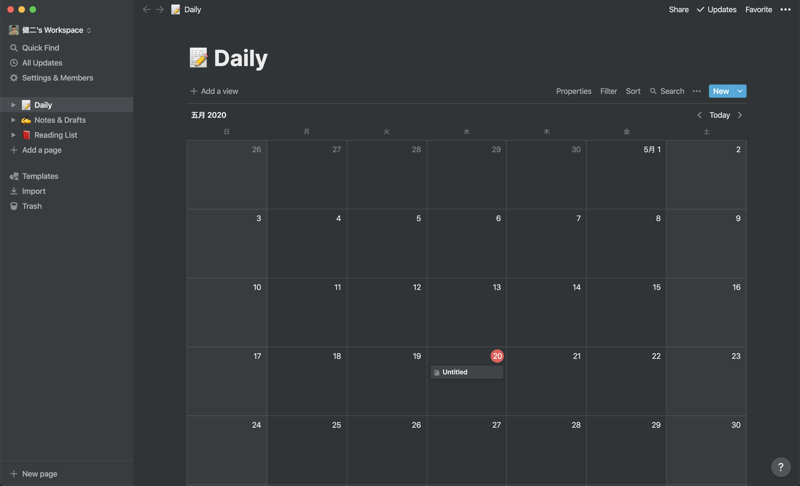
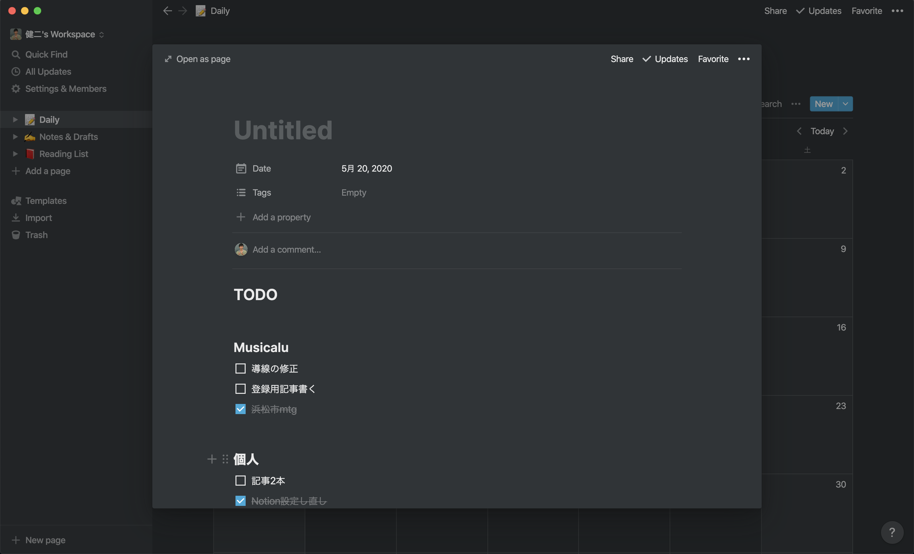
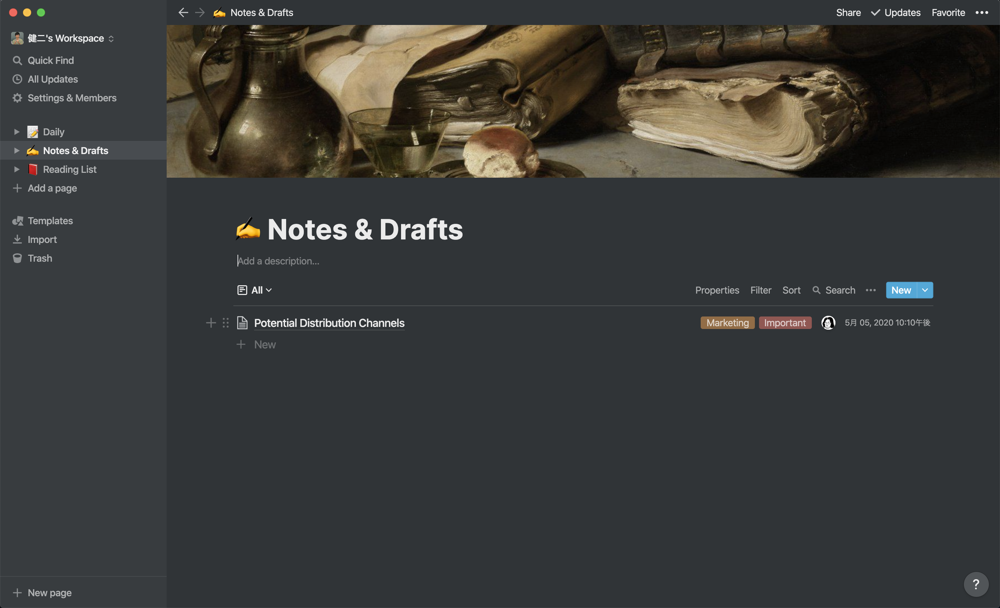
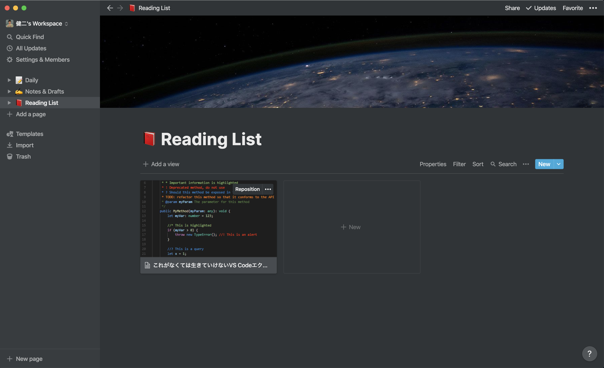

[Notion]1000ページ以上でも無料化！僕なりの使い方をまとめます
Notionのデザインほんと好き

目次
この記事はこんな人が書いています
 だちけん
だちけん
株式会社ムジカルを設立し、webアプリケーションの開発、webマーケティングを担当しています。
webアプリケーションでは、Vue.js、Ruby on Rails、Node.jsを用いての開発が得意です。
まったくゼロの状態から、要件定義を含めてシステム開発にとりかかったことで、幅広い知識を学習しながらよしなに進めるスキルを身につけました。
フリーランスとして、エンジニアリングやコンサルティングも行なっています。
詳しくはaboutを読んでみてください。
なんと、Notionが無料化を発表しましたね。
これまで、1000ページ以上Notionをつかうと個人でも有料になってしまったのですが、この発表で個人利用であれば全て無料になりました。
ぼくは3月まで学生だったので、アカデミックプラン使ってましたが…
4月からは大学のメールアドレスが使えなくなってしまってデータ復元ができなくなっていたので、Kibelaを個人利用していたのですが、これを機にNotionを再度活用し始めたので、僕なりの活用方法をまとめてみました。
個人利用の目的
そもそも個人利用で行っていることを始めにご紹介しますね。
個人利用の目的は以下の3つです。
- 日報ツールとして
- メモとして
- 記事ストックとして
日報ツールとして

日報ツールですが、Notionのカレンダーに追加する感じでやってます。
まだUntitledになってますが、タイトルはその日を一言でまとめて入れるようにしています。

日報内容はこんな感じ。
その日の朝にTODOまとめて、それを全て完了させるという流れでやっています。
メモとして

メモはふつーのリストですね。
タグつけたりできるのが地味に便利かなと思って、とりあえずなんでもここにいれこむ形です。
記事ストックとして

最後は記事ストックとしてですね。
こちらは、chromeの拡張機能と連携してブックマークしておくほどじゃないけど便利な記事を入れるという運用にしています。
技術系の調査をしていると、「なんか後で使いそうだな〜」と思う記事がたくさん出てくるので、そういうのをタグつけて管理しています。
Notionの使い方をまとめてみましたが、本当にいろんな使い方ができるので重宝しています。
もしもっと便利な使い方あるよ！などあれば教えていただけると嬉しいです。